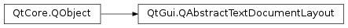

QAbstractTextDocumentLayout¶
Inherited by: QPlainTextDocumentLayout
Synopsis¶
Functions¶
- def
anchorAt(pos) - def
document() - def
format(pos) - def
formatAt(pos) - def
formatIndex(pos) - def
handlerForObject(objectType) - def
imageAt(pos) - def
paintDevice() - def
registerHandler(objectType, component) - def
setPaintDevice(device) - def
unregisterHandler(objectType[, component=nullptr])
Virtual functions¶
- def
blockBoundingRect(block) - def
documentChanged(from, charsRemoved, charsAdded) - def
documentSize() - def
draw(painter, context) - def
drawInlineObject(painter, rect, object, posInDocument, format) - def
frameBoundingRect(frame) - def
hitTest(point, accuracy) - def
pageCount() - def
positionInlineObject(item, posInDocument, format) - def
resizeInlineObject(item, posInDocument, format)
Signals¶
- def
documentSizeChanged(newSize) - def
pageCountChanged(newPages) - def
update([arg__1=QRectF(0., 0., 1000000000., 1000000000.)]) - def
updateBlock(block)
Detailed Description¶
The
PySide2.QtGui.QAbstractTextDocumentLayoutclass is an abstract base class used to implement custom layouts for QTextDocuments.The standard layout provided by Qt can handle simple word processing including inline images, lists and tables.
Some applications, e.g., a word processor or a DTP application might need more features than the ones provided by Qt’s layout engine, in which case you can subclass
PySide2.QtGui.QAbstractTextDocumentLayoutto provide custom layout behavior for your text documents.An instance of the
PySide2.QtGui.QAbstractTextDocumentLayoutsubclass can be installed on aPySide2.QtGui.QTextDocumentobject with thePySide2.QtGui.QTextDocument.setDocumentLayout()function.You can insert custom objects into a
PySide2.QtGui.QTextDocument; see thePySide2.QtGui.QTextObjectInterfaceclass description for details.See also
-
class
PySide2.QtGui.QAbstractTextDocumentLayout(doc)¶ Parameters: doc – PySide2.QtGui.QTextDocumentCreates a new text document layout for the given
document.
-
PySide2.QtGui.QAbstractTextDocumentLayout.anchorAt(pos)¶ Parameters: pos – PySide2.QtCore.QPointFReturn type: unicode Returns the reference of the anchor the given
position, or an empty string if no anchor exists at that point.
-
PySide2.QtGui.QAbstractTextDocumentLayout.blockBoundingRect(block)¶ Parameters: block – PySide2.QtGui.QTextBlockReturn type: PySide2.QtCore.QRectFReturns the bounding rectangle of
block.
-
PySide2.QtGui.QAbstractTextDocumentLayout.document()¶ Return type: PySide2.QtGui.QTextDocumentReturns the text document that this layout is operating on.
-
PySide2.QtGui.QAbstractTextDocumentLayout.documentChanged(from, charsRemoved, charsAdded)¶ Parameters: - from –
PySide2.QtCore.int - charsRemoved –
PySide2.QtCore.int - charsAdded –
PySide2.QtCore.int
This function is called whenever the contents of the document change. A change occurs when text is inserted, removed, or a combination of these two. The change is specified by
position,charsRemoved, andcharsAddedcorresponding to the starting character position of the change, the number of characters removed from the document, and the number of characters added.For example, when inserting the text “Hello” into an empty document,
charsRemovedwould be 0 andcharsAddedwould be 5 (the length of the string).Replacing text is a combination of removing and inserting. For example, if the text “Hello” gets replaced by “Hi”,
charsRemovedwould be 5 andcharsAddedwould be 2.For subclasses of
PySide2.QtGui.QAbstractTextDocumentLayout, this is the central function where a large portion of the work to lay out and position document contents is done.For example, in a subclass that only arranges blocks of text, an implementation of this function would have to do the following:
- Determine the list of changed
PySide2.QtGui.QTextBlock(s) using the parameters provided. - Each
PySide2.QtGui.QTextBlockobject’s correspondingPySide2.QtGui.QTextLayoutobject needs to be processed. You can access thePySide2.QtGui.QTextBlock‘s layout using theQTextBlock.layout()function. This processing should take the document’s page size into consideration. - If the total number of pages changed, the
PySide2.QtGui.QAbstractTextDocumentLayout.pageCountChanged()signal should be emitted. - If the total size changed, the
PySide2.QtGui.QAbstractTextDocumentLayout.documentSizeChanged()signal should be emitted. - The
PySide2.QtGui.QAbstractTextDocumentLayout.update()signal should be emitted to schedule a repaint of areas in the layout that require repainting.
See also
- from –
-
PySide2.QtGui.QAbstractTextDocumentLayout.documentSize()¶ Return type: PySide2.QtCore.QSizeFReturns the total size of the document’s layout.
This information can be used by display widgets to update their scroll bars correctly.
-
PySide2.QtGui.QAbstractTextDocumentLayout.documentSizeChanged(newSize)¶ Parameters: newSize – PySide2.QtCore.QSizeF
-
PySide2.QtGui.QAbstractTextDocumentLayout.draw(painter, context)¶ Parameters: - painter –
PySide2.QtGui.QPainter - context –
PySide2.QtGui.QAbstractTextDocumentLayout::PaintContext
Draws the layout with the given
painterusing the givencontext.- painter –
-
PySide2.QtGui.QAbstractTextDocumentLayout.drawInlineObject(painter, rect, object, posInDocument, format)¶ Parameters: - painter –
PySide2.QtGui.QPainter - rect –
PySide2.QtCore.QRectF - object –
PySide2.QtGui.QTextInlineObject - posInDocument –
PySide2.QtCore.int - format –
PySide2.QtGui.QTextFormat
This function is called to draw the inline object,
object, with the givenpainterwithin the rectangle specified byrectusing the specified textformat.posInDocumentspecifies the position of the object within the document.The default implementation calls drawObject() on the object handlers. This function is called only within Qt. Subclasses can reimplement this function to customize the drawing of inline objects.
- painter –
-
PySide2.QtGui.QAbstractTextDocumentLayout.format(pos)¶ Parameters: pos – PySide2.QtCore.intReturn type: PySide2.QtGui.QTextCharFormatReturns the character format that is applicable at the given
position.
-
PySide2.QtGui.QAbstractTextDocumentLayout.formatAt(pos)¶ Parameters: pos – PySide2.QtCore.QPointFReturn type: PySide2.QtGui.QTextFormatReturns the text format at the given position
pos.
-
PySide2.QtGui.QAbstractTextDocumentLayout.formatIndex(pos)¶ Parameters: pos – PySide2.QtCore.intReturn type: PySide2.QtCore.intReturns the index of the format at position
pos.
-
PySide2.QtGui.QAbstractTextDocumentLayout.frameBoundingRect(frame)¶ Parameters: frame – PySide2.QtGui.QTextFrameReturn type: PySide2.QtCore.QRectFReturns the bounding rectangle of
frame.
-
PySide2.QtGui.QAbstractTextDocumentLayout.handlerForObject(objectType)¶ Parameters: objectType – PySide2.QtCore.intReturn type: PySide2.QtGui.QTextObjectInterfaceReturns a handler for objects of the given
objectType.
-
PySide2.QtGui.QAbstractTextDocumentLayout.hitTest(point, accuracy)¶ Parameters: - point –
PySide2.QtCore.QPointF - accuracy –
PySide2.QtCore.Qt.HitTestAccuracy
Return type: PySide2.QtCore.intReturns the cursor position for the given
pointwith the specifiedaccuracy. Returns -1 if no valid cursor position was found.- point –
-
PySide2.QtGui.QAbstractTextDocumentLayout.imageAt(pos)¶ Parameters: pos – PySide2.QtCore.QPointFReturn type: unicode Returns the source of the image at the given position
pos, or an empty string if no image exists at that point.
-
PySide2.QtGui.QAbstractTextDocumentLayout.pageCount()¶ Return type: PySide2.QtCore.intReturns the number of pages contained in the layout.
-
PySide2.QtGui.QAbstractTextDocumentLayout.pageCountChanged(newPages)¶ Parameters: newPages – PySide2.QtCore.int
-
PySide2.QtGui.QAbstractTextDocumentLayout.paintDevice()¶ Return type: PySide2.QtGui.QPaintDeviceReturns the paint device used to render the document’s layout.
-
PySide2.QtGui.QAbstractTextDocumentLayout.positionInlineObject(item, posInDocument, format)¶ Parameters: - item –
PySide2.QtGui.QTextInlineObject - posInDocument –
PySide2.QtCore.int - format –
PySide2.QtGui.QTextFormat
Lays out the inline object
itemusing the given textformat.posInDocumentspecifies the position of the object within the document.The default implementation does nothing. This function is called only within Qt. Subclasses can reimplement this function to customize the position of inline objects.
- item –
-
PySide2.QtGui.QAbstractTextDocumentLayout.registerHandler(objectType, component)¶ Parameters: - objectType –
PySide2.QtCore.int - component –
PySide2.QtCore.QObject
Registers the given
componentas a handler for items of the givenobjectType.Note
has to be called once for each object type. This means that there is only one handler for multiple replacement characters of the same object type.
The text document layout does not take ownership of
component.- objectType –
-
PySide2.QtGui.QAbstractTextDocumentLayout.resizeInlineObject(item, posInDocument, format)¶ Parameters: - item –
PySide2.QtGui.QTextInlineObject - posInDocument –
PySide2.QtCore.int - format –
PySide2.QtGui.QTextFormat
Sets the size of the inline object
itemcorresponding to the textformat.posInDocumentspecifies the position of the object within the document.The default implementation resizes the
itemto the size returned by the object handler’s intrinsicSize() function. This function is called only within Qt. Subclasses can reimplement this function to customize the resizing of inline objects.- item –
-
PySide2.QtGui.QAbstractTextDocumentLayout.setPaintDevice(device)¶ Parameters: device – PySide2.QtGui.QPaintDeviceSets the paint device used for rendering the document’s layout to the given
device.
-
PySide2.QtGui.QAbstractTextDocumentLayout.unregisterHandler(objectType[, component=nullptr])¶ Parameters: - objectType –
PySide2.QtCore.int - component –
PySide2.QtCore.QObject
Unregisters the given
componentas a handler for items of the givenobjectType, or any handler if thecomponentis not specified.- objectType –
-
PySide2.QtGui.QAbstractTextDocumentLayout.update([arg__1=QRectF(0., 0., 1000000000., 1000000000.)])¶ Parameters: arg__1 – PySide2.QtCore.QRectF
-
PySide2.QtGui.QAbstractTextDocumentLayout.updateBlock(block)¶ Parameters: block – PySide2.QtGui.QTextBlock
© 2018 The Qt Company Ltd. Documentation contributions included herein are the copyrights of their respective owners. The documentation provided herein is licensed under the terms of the GNU Free Documentation License version 1.3 as published by the Free Software Foundation. Qt and respective logos are trademarks of The Qt Company Ltd. in Finland and/or other countries worldwide. All other trademarks are property of their respective owners.